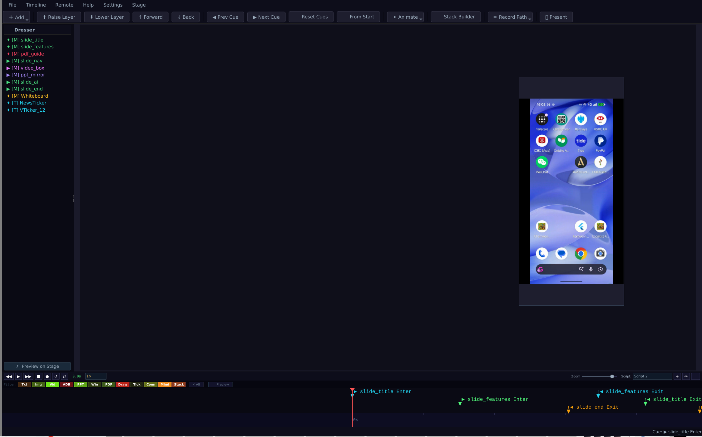
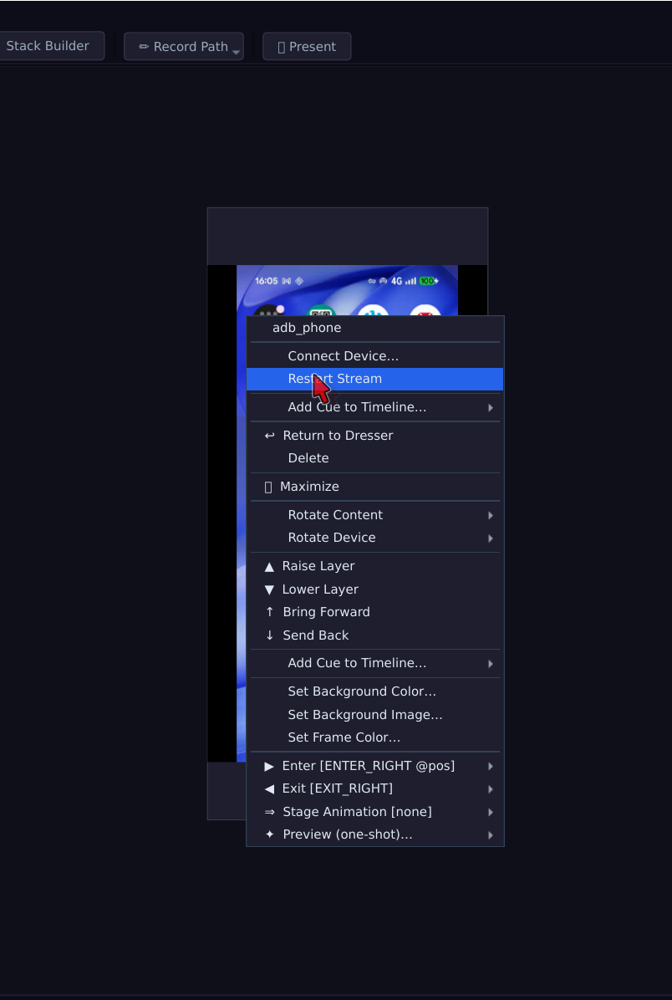
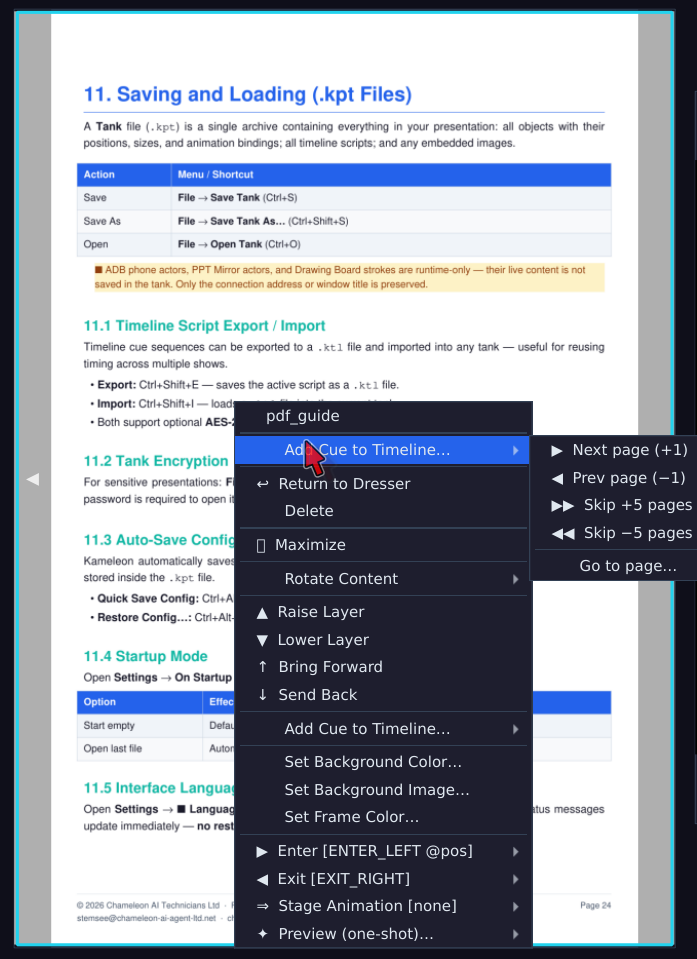
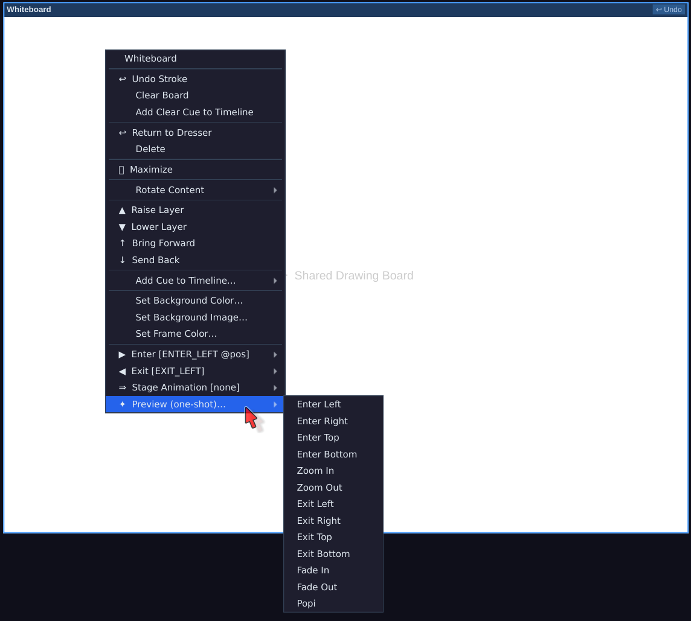
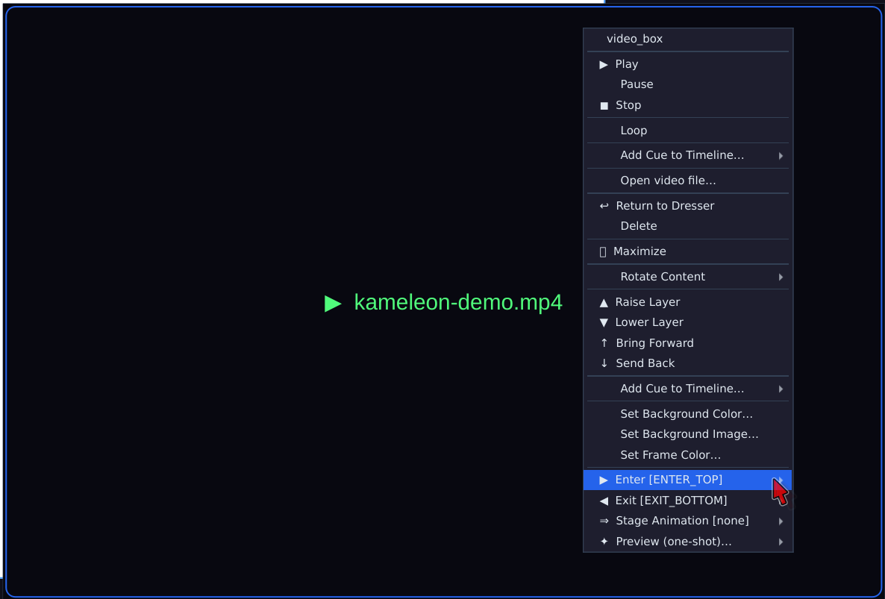
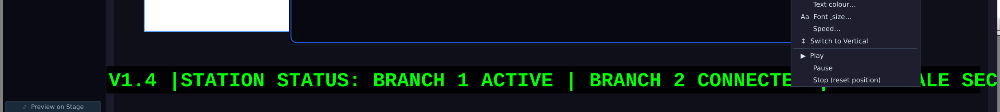
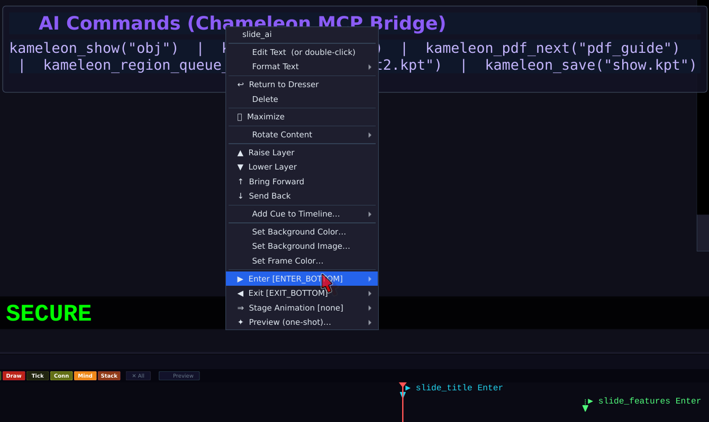

A theatre-inspired presentation system where your slides are a Stage, your content blocks are Actors and transitions are Cues — all controllable from a phone.
A live demo of Kameleon Presenter — stages, stacks, cues and mobile control
Presentations built like a stage production — objects have entrances, exits and cues
The universal content container. Each stack holds multiple slots (images, text, PDFs, video, HTML). Two modes:
📂 Stack from Folder — pick a directory of numerically-prefixed files (01-intro.png, 02-demo.mp4, 03-notes.txt) and Kameleon builds a fully typed stack in one click. Images, video, PDF, plain text, and HTML are all supported.
Per-object enter/exit animations with freehand motion paths. Choose a directional preset and the app immediately enters pick-target mode — one gesture sets both animation type and destination. Paths use Douglas-Peucker + Catmull-Rom smoothing.
Stage animations move objects while they're already on screen. Right-click any on-stage object → ⇒ Stage Animation to record a freehand stage path or pick a POPI (Pop-Out Pop-In) target: the object scales to zero, teleports, then springs back in at the new position.
Off-stage holding area — create objects in the dresser, preview on stage with a double-click. Objects removed from stage with the Delete key reappear in the Dresser automatically.
Right-click any dresser item for a context menu: 👁 Preview (place at centre-stage, no animation — for size inspection; original position is restored on return so playback is never affected), ⧉ Duplicate, ◈ Reserve (grey-out a holding slot), or ✕ Remove. Objects with a stage animation show a ⇒ suffix in the list.
Trigger points advance the presentation step by step, just like theatrical lighting cues. Each cue can animate objects in or out, switch stack slots or execute timed sequences.
Paint generative animation bands directly on the timeline — scheduled for breaks or intervals. During an AI Stage Block, on-stage objects choreograph themselves automatically in one of four patterns: orbit, snake, random drift, or focus spotlight. Objects return to their original positions when the block ends.
Scrolling text tickers in horizontal (right → left) and vertical (bottom → top) orientations. Up to 8 tickers can run simultaneously — ideal for breaking-news strips, agenda reminders, or event info panels. Speed and text are editable live.
A compact filter bar sits between the controls and the ruler with one toggle button per object type: Txt · Img · ADB · PPT · PDF · Draw · Tick · Conn · Stack. Click any combination to isolate just those cues — all others are hidden. A faint blue tint on the ruler reminds you the filter is active. Click ✕ All to restore the full view instantly.
The ⬛ Preview toggle takes filtering one step further: when active, playback itself only fires cues for the selected types — everything else stays static on stage. The playhead turns amber while preview is on, so you always know you're in a filtered run. Perfect for rehearsing a single object type or checking ADB cue timing without disturbing the rest of the presentation.
The red playhead line is fixed at the centre of the timeline widget. As playback advances, the ruler scrolls leftward beneath it — upcoming cues always visible on the right, past cues drifting off the left. Hover over any cue arrowhead for a large floating popup showing its full label and timestamp.
Scroll wheel scrubs the playhead (1 s per notch). Ctrl+scroll zooms the ruler in/out (20–200 px/s range), keeping the zoom slider in sync.
Enable ⇄ to reverse direction at each boundary instead of restarting. The timeline plays forward to the end, then backwards to the start, then forward again — indefinitely. Cues fire their opposite action on the reverse pass (enter↔exit). The GenerativeAnimator reverses its beat direction so orbit, snake and focus patterns retrace their paths. The playhead turns cyan with a downward triangle during reverse travel. Pair with AI Stage Blocks for hypnotic break-time displays.
Apply a pre-built timing framework in one click: Conference Keynote (20 min), University Lecture (50 min), Workshop (90 min), Short Pitch (5 min), or Conference Half-Day (3 hrs). Templates retime existing cues or scaffold an empty script with labelled markers.
A single .kpt tank holds up to 10 named scripts — independent cue timings sharing the same stage objects. Switching scripts repopulates the timeline instantly. Perfect for a full version, a highlights cut, and a Q&A order all in one file.
Projects are saved as ZIP archives (.kpt) containing all media assets, layout data, animation configs, and all named scripts. Open on any machine running Chameleon.
The stage uses a 0–10,000 logical coordinate space independent of display resolution. Presentations look identical on a laptop screen or a 4K projector.
Run the presenter from your phone; let students push content from theirs
The Chameleon mobile bridge (WebSocket) relays theatre commands from any Android device. Control stack_next / prev / play / pause / stop, push image or text slots into a stack, and see stack state broadcast in real time.
Students push images or text to a Stage-mode stack from their phones. Submissions appear in the thumbnail strip with an orange pulsing border. The presenter can approve, hold, reject or promote each one before it goes live on screen.
Collaborative freehand canvas controllable from the mobile bridge — draw_stroke / clear / undo. Ideal for annotating slides, brainstorming or live quizzes.
Right-click any object, pick Enter Left (or any directional preset), and the app enters pick-target mode instantly — one click sets where the object travels to. Recording a freehand motion path automatically stamps start and end cues onto the timeline.
ADBPhoneBox streams a live Android screen directly onto the stage via ADB. PPTMirrorBox captures a PowerPoint window — present your existing decks inside Kameleon without conversion.
🕐 ADB timeline cues — right-click any ADB actor → Add Cue to Timeline… to stamp Restart Stream, Open URL, or Launch App (by package name) cues at precise playhead positions. Cues fire during both spacebar-paced and auto-timeline playback.
Choose whether Kameleon opens with the last project loaded or a blank stage via the Settings → On Startup menu. The preference is saved to ~/.chameleon/kameleon_settings.json and respected every launch.
Open Settings → 🌐 Language to switch the Kameleon Presenter UI into any of 25 languages — including French, German, Spanish, Arabic, Chinese, Japanese, Korean, Russian, Welsh, Thai, and more. All menus update instantly with no restart. Translations are fetched in the background on first use; switching is instant once cached.
Kameleon Presenter — captured live







Contact us to discuss a licence or arrange a live demonstration of Kameleon Presenter.
Request a demo 📄 Download User Guide (PDF) ← Back to overview